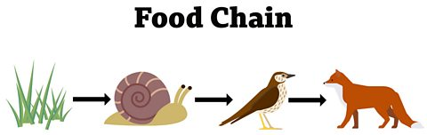
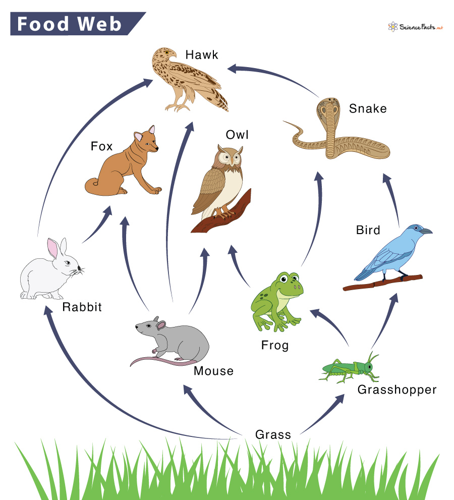

Food chains is a link is things that eat each other, in a line. It starts with a producer (grass) followed by a small animal (snail) then a bigger animal (bird) then a bigger animal (cat) and so on.
Food webs are a big collection of food chains feeding into each other food chains to create an ecosystem. If one species dies out, food is greatly reduced. This can casue other species to die out.
